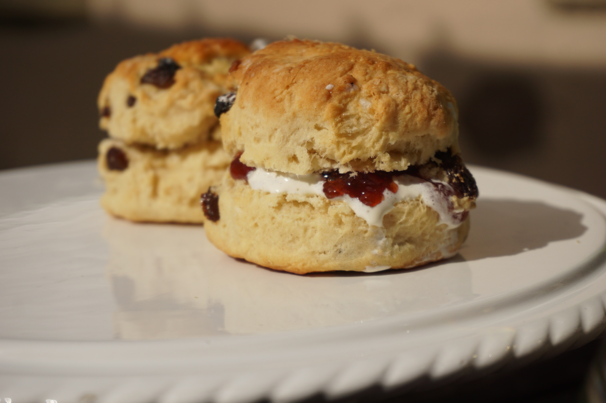

Scones

Simple, easy-to-make scones that will please your guests
Before you put the tea on, spend a few minutes making these scones first to make a pot of tea with friends more satisfying.
Ingredients
- flour, 3 cups
- butter, 80 g
- milk, 300 mL
- cream and jam
Procedure
- Rub butter into the flour.
- Add the mild and knead the ensuing dough for a short time.
- Press the dough into a 2 cm thick slab.
- Cut discs about 5 cm in diameter from the dough.
- Bake the scones at 200 °C for 20 min.
- Cool the scones on a wire rack and serve warm with tea, cream and jam.